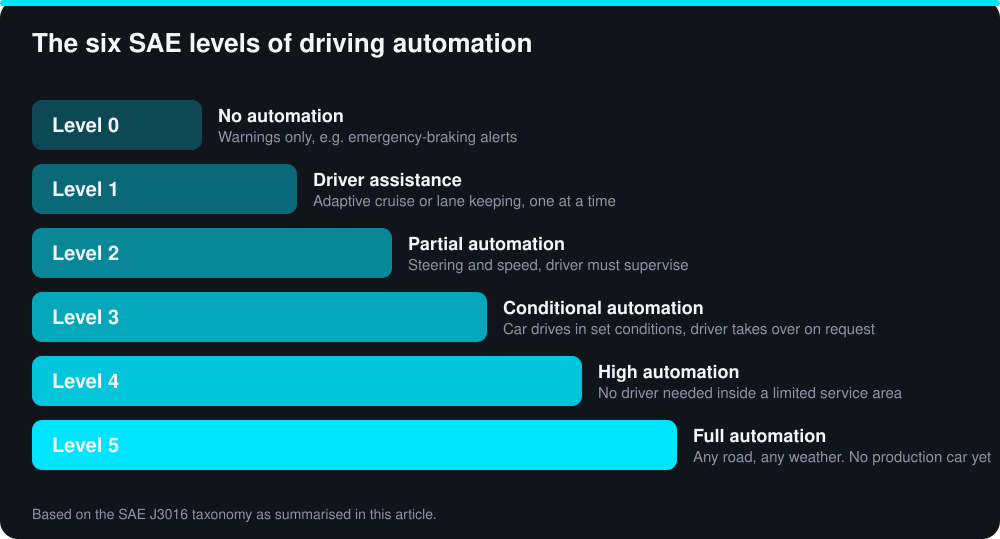

Artificial intelligence is reshaping the automotive world faster than any technology since the internal combustion engine. From Tesla's neural-network-based Full Self-Driving system to Waymo's robotaxis operating on public streets, AI is already doing things in cars that seemed science fiction just a decade ago. But how exactly does it work — and how far are we really from a car that can drive itself anywhere, with no human input at all?
The 6 Levels of Vehicle Autonomy Explained (SAE J3016)
The SAE (Society of Automotive Engineers) defines six levels of driving automation, from Level 0 (no automation) to Level 5 (full automation). Understanding these levels is key to cutting through the marketing hype.
No Automation
The human driver controls everything. Features like automatic emergency braking and lane departure warnings are considered Level 0 assistants — they warn, but don't act.
Driver Assistance
The system controls either steering or acceleration/braking, but not both simultaneously. Adaptive cruise control and lane-keeping assist are common Level 1 features found in most new cars today.
Partial Automation ← Where we are today
The system handles both steering and acceleration/braking simultaneously, but the driver must remain engaged and ready to take over at any moment. Tesla FSD, GM Super Cruise, and Ford BlueCruise all operate at Level 2.
Conditional Automation
The system handles all driving tasks in specific conditions (e.g., highway only), and the driver doesn't need to monitor constantly but must be ready to intervene when asked. Mercedes-Benz's Drive Pilot is currently the only Level 3 system approved for sale in the US (in Nevada and California, at speeds up to 40 mph).
High Automation
The vehicle handles all driving tasks within a defined operational design domain (specific geographic area or conditions) without human intervention. Waymo One robotaxis in San Francisco and Phoenix operate at Level 4 — no safety driver required in their approved service areas.
Full Automation
The vehicle can handle all driving tasks, in all conditions, anywhere a human driver could go — no steering wheel or pedals required. No production vehicle has achieved Level 5. Most experts believe true Level 5 is still many years away.
Advertisement
How AI "Sees" the Road: Sensors & Perception
Before an autonomous vehicle can make decisions, it needs to perceive the world around it with high accuracy. Different companies use different combinations of sensors to achieve this:
Cameras
High-resolution cameras provide rich color and texture data — essential for reading signs, traffic lights, lane markings, and recognizing objects. Tesla relies almost entirely on cameras (8 cameras covering 360°) combined with neural networks. Low cost, high resolution, but performance degrades in poor lighting or adverse weather.
LiDAR
Light Detection and Ranging fires millions of laser pulses per second to create a precise 3D point cloud of the environment. Waymo, Cruise, and most robotaxi companies rely heavily on LiDAR. Extremely accurate at measuring distance and detecting objects in 3D space, but expensive and less effective in heavy rain, fog, or snow.
Radar
Radio waves detect the speed and distance of objects even in complete darkness and through heavy precipitation. Radar is highly reliable and cheap, and virtually every car with adaptive cruise control uses it. However, it provides lower resolution than cameras or LiDAR and struggles to identify what type of object it's detecting.
Most serious autonomous driving systems use sensor fusion — combining data from multiple sensor types to compensate for the weaknesses of each. Waymo's Jaguar I-PACE robotaxis use cameras + LiDAR + radar together. The AI then processes all this data simultaneously to build a real-time 3D model of the vehicle's surroundings.

Machine Learning & Neural Networks: The AI Brain
The real revolution in autonomous driving came from deep learning — specifically convolutional neural networks (CNNs) trained on massive datasets of real-world driving scenarios. These networks learn to identify objects, predict behavior, and plan actions by processing millions (or billions) of examples.
Tesla's approach is particularly interesting: its fleet of over 5 million vehicles essentially acts as a global data collection network. Every mile driven by every Tesla — with driver intervention data — feeds back into Tesla's training pipeline, creating a continuously improving system. Tesla's Dojo supercomputer, one of the most powerful AI training systems in the world, processes this data to improve FSD with each over-the-air software update.
Waymo takes a different approach: using meticulously curated, labeled data from its test fleet combined with massive simulated driving environments. Waymo's simulation system can generate millions of synthetic driving scenarios — including rare and dangerous edge cases — to train its AI without putting anyone at risk.
Tesla FSD vs Waymo: Two Very Different Bets
Tesla FSD is a camera-only, neural-network-first approach designed to work on any road in the world without pre-mapped routes. Tesla argues that humans drive with just eyes and a brain — so a sufficiently advanced vision-based AI system can too. The advantage: scalability. The disadvantage: the system must handle infinite edge cases from training data alone.
Waymo uses detailed HD maps of its operating areas combined with LiDAR + camera + radar fusion. This makes Waymo's system extraordinarily safe and reliable within its service areas — but limits it to geofenced regions that have been painstakingly mapped. Expansion to new cities is slow and expensive. Waymo's per-mile safety record in San Francisco and Phoenix is impressive, with autonomous miles driven per incident figures that outperform average human drivers.
The Biggest Challenges AI Still Faces
- Edge cases & long-tail problems: AI systems can handle 99% of driving scenarios well but struggle with rare, unusual situations — a mattress on the highway, an unusual traffic signal configuration, a construction worker directing traffic with hand signals.
- Adverse weather: Heavy rain, snow, ice, and fog degrade sensor performance and road marking visibility significantly. No current system handles severe weather with full confidence.
- Predicting human behavior: Pedestrians, cyclists, and other drivers don't always follow rules. A child chasing a ball into the street, an aggressive lane-splitter on a motorcycle — these scenarios require social intelligence that is difficult to encode.
- Ethical decisions (the "trolley problem"): In unavoidable crash scenarios, how should a self-driving car decide who to protect? These ethical questions don't have universally agreed-upon answers and complicate legal and regulatory frameworks.
- Regulatory approval: Even if the technology reaches readiness, navigating US state-by-state regulations and federal NHTSA standards is a lengthy process. Different states have dramatically different rules for autonomous vehicle testing and deployment.
Is Full Self-Driving Legal in the US?
As of 2026, no fully autonomous (Level 4 or 5) vehicle is approved for general consumer sale in the United States. Level 4 robotaxi operations are approved in specific cities for specific companies — Waymo in San Francisco, Phoenix, Los Angeles, and Austin; Zoox (owned by Amazon) in select areas; and a few others. All other consumer vehicles with "self-driving" features (including Tesla FSD) are classified as SAE Level 2 and legally require an attentive driver who is ready to take control at any moment.
The Future: When Will We See Level 5 Cars?
Predictions from industry experts vary widely. In the early 2010s, many executives (including some at Google and Tesla) predicted fully autonomous vehicles by 2020. That clearly did not happen. Today's more sober forecasts suggest:
- Level 4 robotaxis will continue expanding to more US cities through 2026–2030, but coverage will remain limited to well-mapped urban areas.
- Level 4 consumer vehicles (self-driving in specific highway conditions) may reach select markets between 2027–2030.
- True Level 5 autonomy — a car that can go anywhere a human can drive — is widely considered to be a decade or more away, if it's achievable at all in the near term.
The honest answer: the technology is progressing faster than ever, but the final leap to full autonomy is harder than it looks. The difference between "handles 99% of situations perfectly" and "handles 100% of situations safely" in the complex, unpredictable real world may require breakthroughs we haven't achieved yet.
Advertisement
Frequently Asked Questions
No. Despite its name, Tesla's Full Self-Driving (FSD) system is SAE Level 2, meaning it requires an attentive driver who monitors the road and is ready to take over at all times. Tesla has publicly stated that FSD requires active supervision. True self-driving (Level 4+) means no driver attention is required in the vehicle's operational domain.
Based on Waymo's published safety data, Waymo's autonomous vehicles in their operating areas have a significantly lower rate of injury-causing crashes per million miles compared to the national average for human drivers. However, direct comparisons are complex because Waymo operates in controlled urban environments, not the full range of conditions human drivers face.
Tesla's CEO Elon Musk argues that cameras are sufficient because humans drive with eyes alone, and that a camera-based AI can achieve the same. LiDAR adds cost and complexity. Waymo and most robotaxi companies argue that LiDAR provides more reliable 3D spatial awareness, especially in low light, and that redundancy from multiple sensor types improves safety. Both approaches have merit — the debate is ongoing in the engineering community.
Autonomous vehicles have the potential to dramatically reduce traffic accidents, since over 90% of crashes are caused by human error (distraction, impairment, fatigue). However, they are unlikely to eliminate accidents entirely. AI systems have their own failure modes, and during the transition period where autonomous and human-driven vehicles share roads, new types of incidents may emerge.
Conclusion
AI is already transforming how we drive, making cars safer and less stressful through Level 2 assistance features that most new vehicles now include. The robotaxi revolution is quietly happening in select US cities, with Waymo proving that driverless cars can operate safely on public roads.
But Level 5 — a car that can truly replace any human driver, anywhere — remains an enormously difficult technical and regulatory challenge. The progress is real and accelerating. The hype, however, has often outpaced reality. The most honest prediction: self-driving technology will continue improving our cars significantly over the next decade, but the fully autonomous future will arrive more gradually than the boldest predictions once suggested.
FutureAutoLab Team
Our tech writers cover AI, autonomous driving, and automotive technology with a focus on accuracy and cutting through marketing hype.